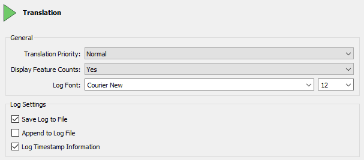
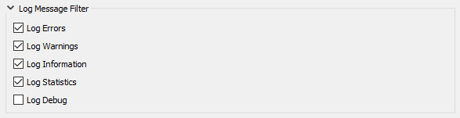

After completing this unit, you’ll be able to:
The FME log file is your best friend for debugging. It tells you how long a translation took, where the time went, and how well FME was able to use the available system resources.
The first thing to notice is that each line of the log is (in most cases) a separate message, for example:
Creating writer for format: Esri Shapefile
However, sometimes the message spans several lines, such as:
-~-~-~-~-~-~-~-~-~-~-~-~-~-~-~-~-~-~-~-~-~-~-~-~-~-~-~-~-~-~-~-~-~-~-~-~-~-~-~-~-
-~ ~-
-~ Feature caches have been recorded at every stage of the translation. ~-
-~ To inspect the recorded features, ~-
-~ click the feature cache icons next to the ports. ~-
-~ ~-
-~-~-~-~-~-~-~-~-~-~-~-~-~-~-~-~-~-~-~-~-~-~-~-~-~-~-~-~-~-~-~-~-~-~-~-~-~-~-~-~-
There are a number of options to adjust the log file and what is displayed. To access these select Tools > FME Options > Translation:

The most important setting is Log Timestamp Information. This option turns on a number of optional fields in the log messages. These are:
For example:
2019-04-01 12:13:55| 0.8| 0.0|INFORM|Closing native MapInfo reader
These timestamps can be used to identify slow sections of your workspace.
Note
The log file always contains timestamps, regardless of this setting.
A common requirement is to filter log messages so that only messages of a certain type are displayed. For example, it can be useful to turn off INFORM and STAT messages in order to make it easier to spot ERRORs and WARNs.
There are two ways to achieve this. Firstly log messages can be filtered using options under Tools > FME Options > Translation:

These options turn each type of message on (or off) for all subsequent translation logs. If a message type is unchecked here it will not appear in a log at all.
The second method of filtering is a set of tools in the log window itself:
These tools are a way to toggle messages on and off in the log window only. They are easier to use and more flexible than using the FME Options for filtering.
Note
The Log Debug option (under FME Options) allows you to turn on debug messages in the log. These are extra log messages that are usually hidden from the user.
Debug messages can help during debugging but are less useful in general FME use. Many messages (labeled "BADNEWS") are alarming “errors” that FME has trapped and kept to itself (like an end-of-file message). For this reason, it's not recommended that this option is turned on permanently.
Also, note that the Log Debug setting persists in the workspace. If you turn that setting on and pass the workspace to another user, it retains the setting and shows debug messages when that other user runs the workspace!
Note
If the log window text is a little small for you, or not stylish enough, use Tools > FME Options > Appearance > Log Font to change the font size and style.